← Interests
Mycology
Field notes only. Never eat a wild mushroom without expert confirmation.
12 mushrooms
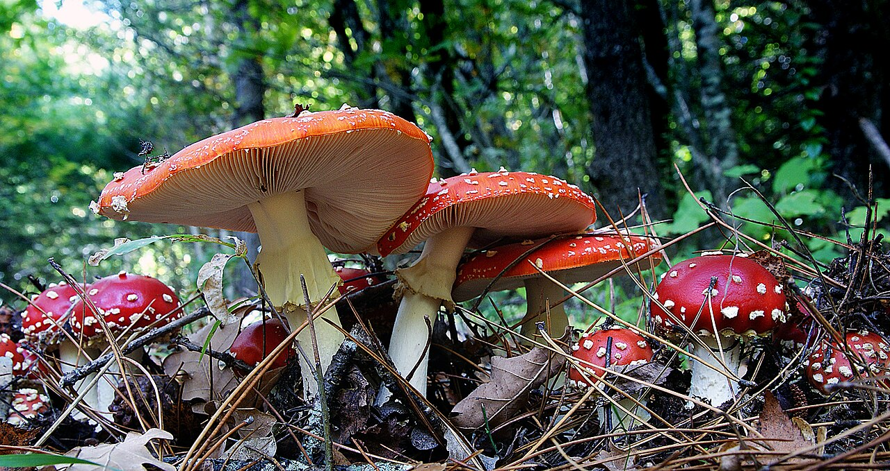
Fly agaric
PoisonousFly agaric
Amanita muscaria
- Edible? No. Toxic and psychoactive.
- Uses Historical and cultural use; not a home treatment.
- Season Late summer through fall.
- Range Northern Hemisphere, including North America and Norway; introduced elsewhere.
- Characteristics Red to orange cap, white warts, white gills and stem.
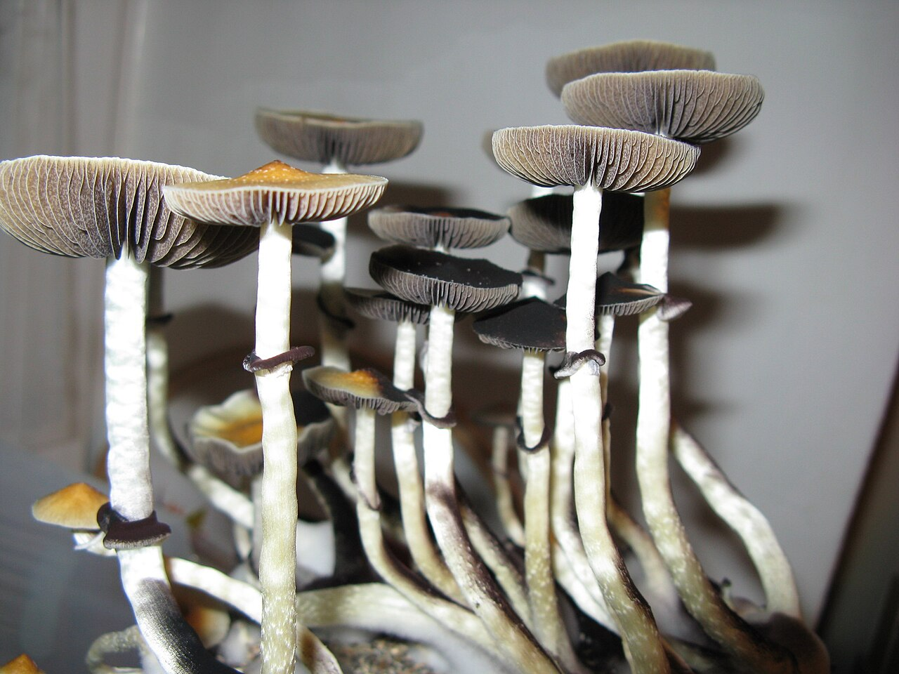
Golden top
PsychedelicGolden top
Psilocybe cubensis
- Edible? No. Psychoactive and not treated as food.
- Risk Contains psilocybin; misidentification and altered judgment can cause serious harm.
- Season Warm, wet periods; timing follows local rainy seasons.
- Range Tropical and subtropical regions in the Americas, Asia and Australia.
- Characteristics Golden-brown cap, dark purplish-brown spores, a stem ring and possible blue bruising. Bruising alone does not confirm identity.
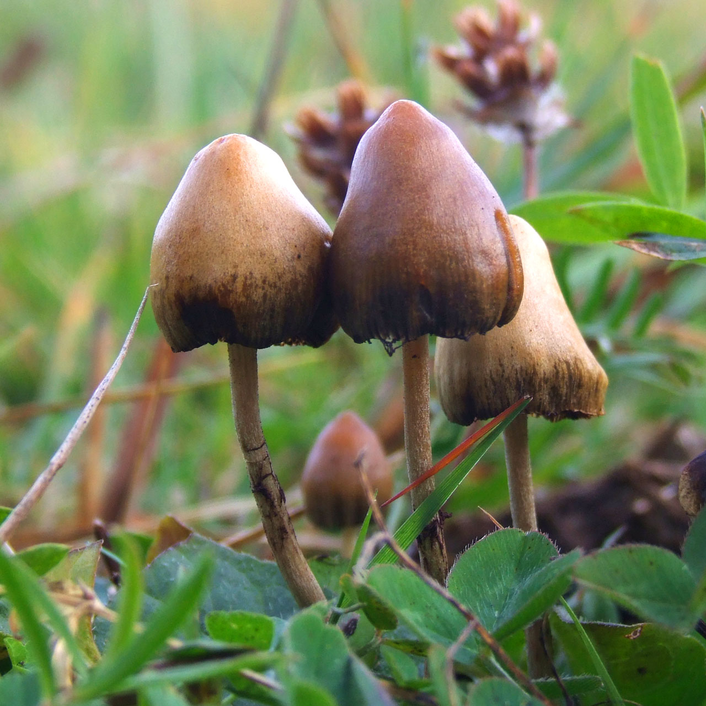
Liberty cap
PsychedelicLiberty cap
Psilocybe semilanceata
- Edible? No. Psychoactive and unsafe to identify from a photo.
- Risk Contains psilocybin and has dangerous small brown lookalikes.
- Season Cool, wet weather from late summer into early winter.
- Range Temperate grasslands in Europe, North America and parts of the Southern Hemisphere.
- Characteristics Small conical brown cap with a pointed tip and slender stem; the cap changes color as it dries.
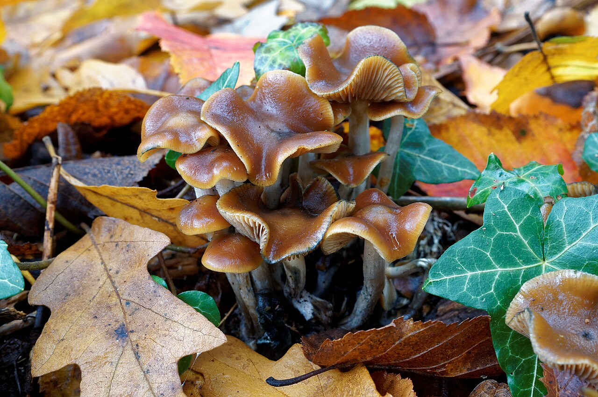
Wavy caps
PsychedelicWavy caps
Psilocybe cyanescens
- Edible? No. Psychoactive and easily confused with harmful species.
- Risk Contains psilocybin; deadly Galerina mushrooms can share the same habitat.
- Season Fall into early winter during cool, wet weather.
- Range Pacific Northwest, western and central Europe, with introduced populations elsewhere.
- Characteristics Caramel-brown cap with a wavy edge, clustered growth on woody debris and possible blue bruising.
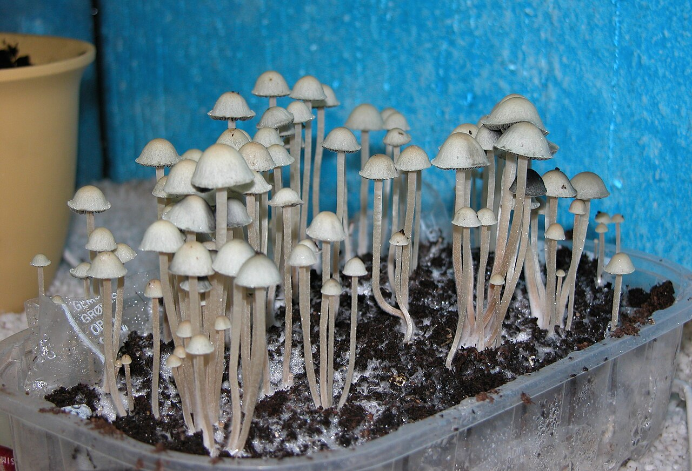
Blue meanie
PsychedelicBlue meanie
Panaeolus cyanescens
- Edible? No. Psychoactive and not treated as food.
- Risk Contains psilocybin; small pale mushrooms often require microscopic identification.
- Season Warm, rainy periods in tropical and subtropical climates.
- Range Tropical and subtropical regions worldwide.
- Characteristics Pale gray to tan cap, slender stem, dark mottled gills and strong blue bruising when damaged.
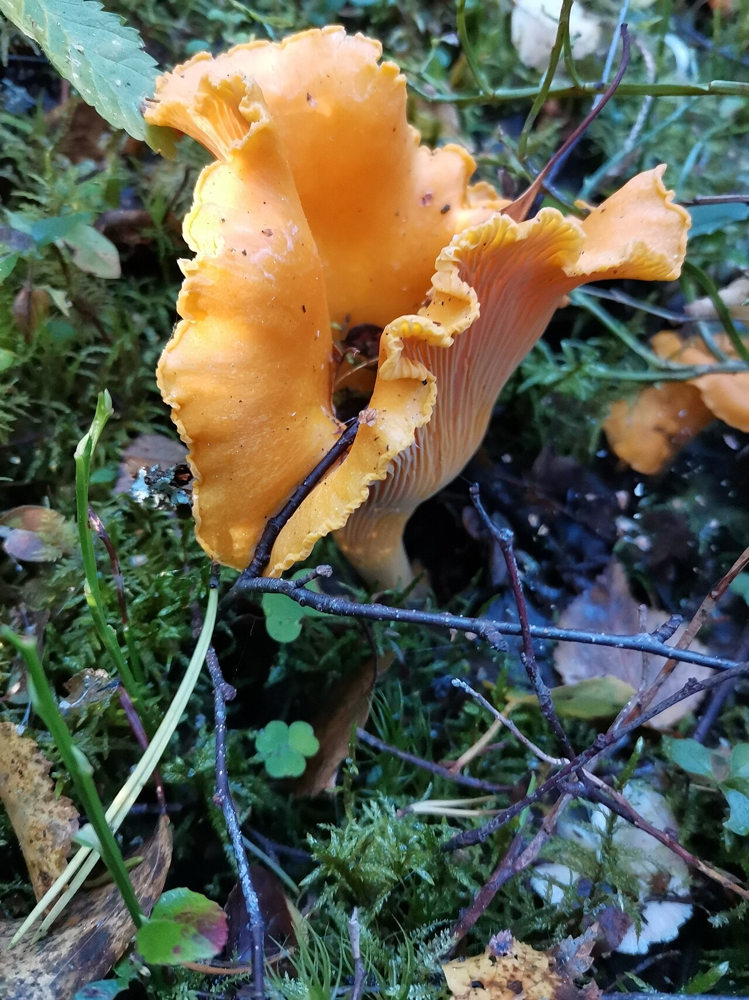
Golden chanterelle
EdibleGolden chanterelle
Cantharellus cibarius
- Edible? Choice edible only after expert identification.
- Uses Culinary; no established medical treatment.
- Season Late summer through fall.
- Range Temperate forests in North America and Europe, including Scandinavia.
- Characteristics Yellow-orange, trumpet shaped, false gill-like ridges, firm flesh and an apricot-like aroma.
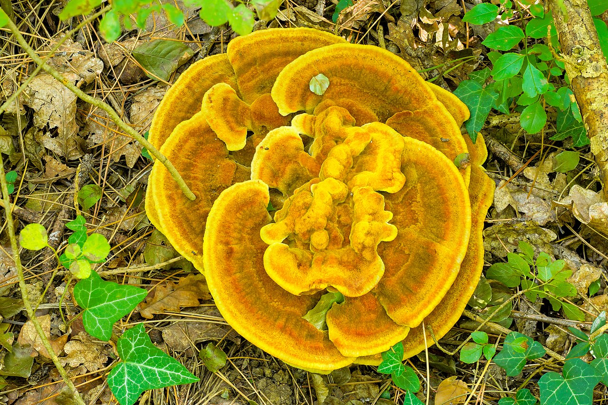
Dyer's polypore
Dye mushroomDyer's polypore
Phaeolus schweinitzii
- Edible? No. Tough and not considered edible.
- Dyes Used to dye wool in yellow, olive, brown and other earth tones.
- Season Summer through fall.
- Range Temperate conifer forests across North America, Europe and Asia.
- Characteristics Velvety rosettes with yellow-brown zones; pores bruise brown.
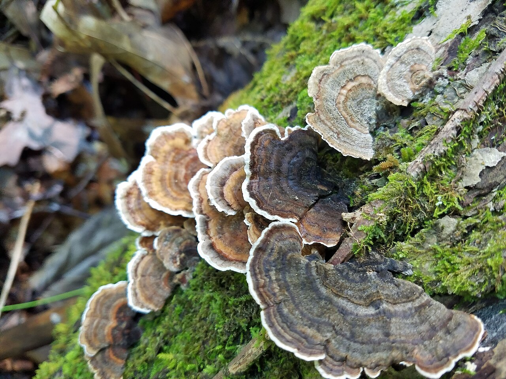
Turkey tail
ResearchTurkey tail
Trametes versicolor
- Edible? No. Thin, leathery and considered inedible.
- Treatment research The extract PSK is used as an adjunct cancer treatment in Japan; this is not the same as eating wild mushrooms.
- Season Found year-round; often most visible from fall through spring.
- Range Worldwide, including North America and Europe.
- Characteristics Concentric color bands, velvety fan-shaped caps and tiny white pores underneath.
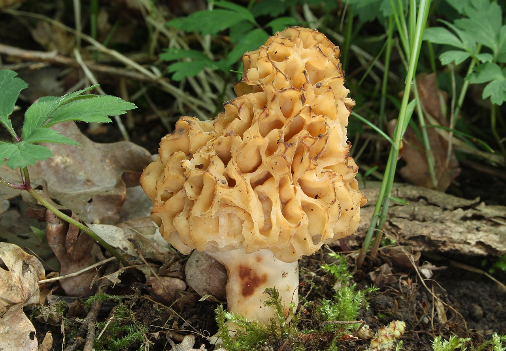
Common morel
EdibleCommon morel
Morchella esculenta
- Edible? Choice edible after expert identification and thorough cooking.
- Uses Culinary.
- Season Brief spring season after adequate rain.
- Range Most prevalent across the Northern Hemisphere.
- Characteristics Honeycomb-like cap with deep pits; hollow stem and cap. Poisonous false morels can look similar.
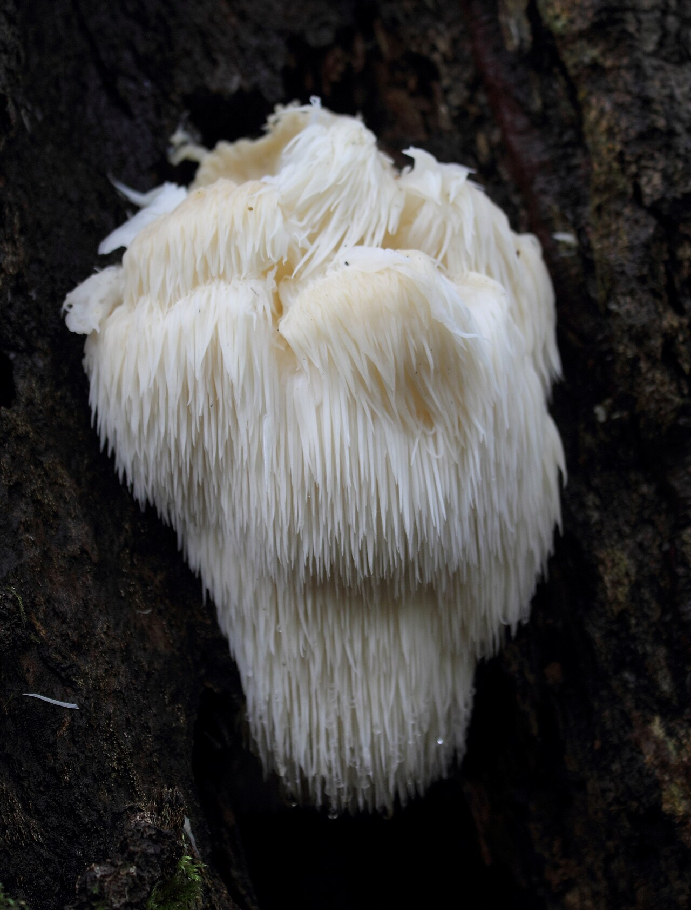
Lion's mane
EdibleLion's mane
Hericium erinaceus
- Edible? Edible after expert identification.
- Uses Culinary; supplements are sold, but health claims require more research.
- Season Late fall through mid-winter in coastal California; timing varies by region.
- Range North America, Europe and Asia on living or dead hardwoods.
- Characteristics Rounded white clusters with long, downward-pointing spines that yellow with age.
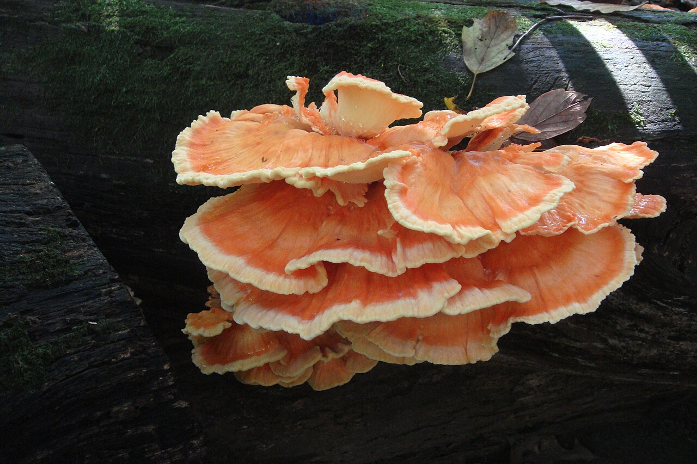
Chicken of the woods
EdibleChicken of the woods
Laetiporus sulphureus
- Edible? Young specimens are considered edible after expert identification and cooking.
- Uses Culinary.
- Season Summer through fall.
- Range Temperate forests of North America, Europe and Asia.
- Characteristics Overlapping yellow-orange shelves on wood; soft when young and hard with age.
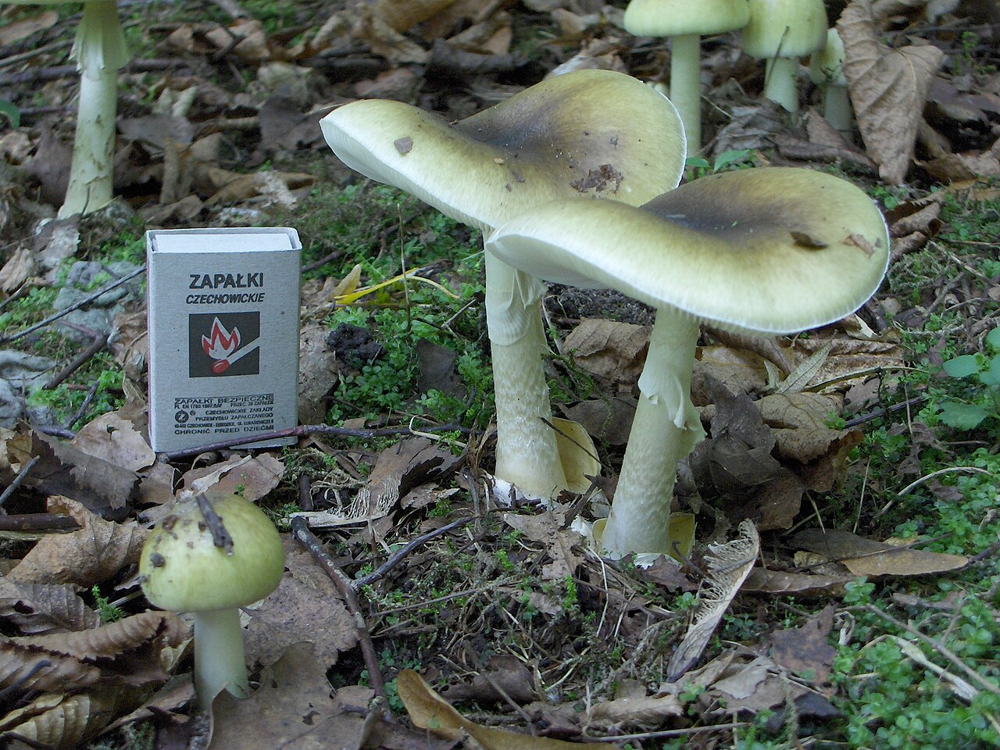
Death cap
DeadlyDeath cap
Amanita phalloides
- Edible? No. Deadly poisonous; cooking does not make it safe.
- Risk Amatoxins can cause delayed liver and kidney failure.
- Season Summer through fall.
- Range Native to Europe and introduced in parts of North America and Australia.
- Characteristics Olive to yellow-green cap, white gills, a stem ring and a cup-like volva at the base.